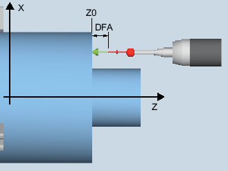

Only applies on a turning machine without the milling technology.
With this measuring version, a workpiece probe with cutting edge positions SL=5 to 8 can be calibrated on a known surface (workpiece-related). The trigger points of the probe are determined.
Optionally, the actual length can be entered in the tool offset memory via the "Adapt tool length" parameter.
The switching position of the workpiece probe in an axis is calculated into the measuring probe length. The calculated trigger point is determined in the corresponding axis and axis direction, and entered in the selected calibration data set (calibration data field) of the workpiece probe.
The probe travels in the measuring direction to the calibration edge (e.g. workpiece)
Calibrate: Length on the surface (CYCLE973), example G18, SL=7
The surface must be in parallel to an axis of the workpiece coordinate system (WCS).
The calibration surface must have a low surface roughness.
The workpiece probe is called as tool with tool offset.
580 must be declared as the probe type.
Calibrating the probe length does not represent measuring the tool. The deviation between the physical probe length and the values in the tool data must be less than 5 mm / 0.2 inch.
The probe must be positioned opposite to the calibration surface.
The probe is at the distance of the selected measurement path (DFA) away from the calibration surface.
See also:
Calibrate: length on surface (CYCLE973)